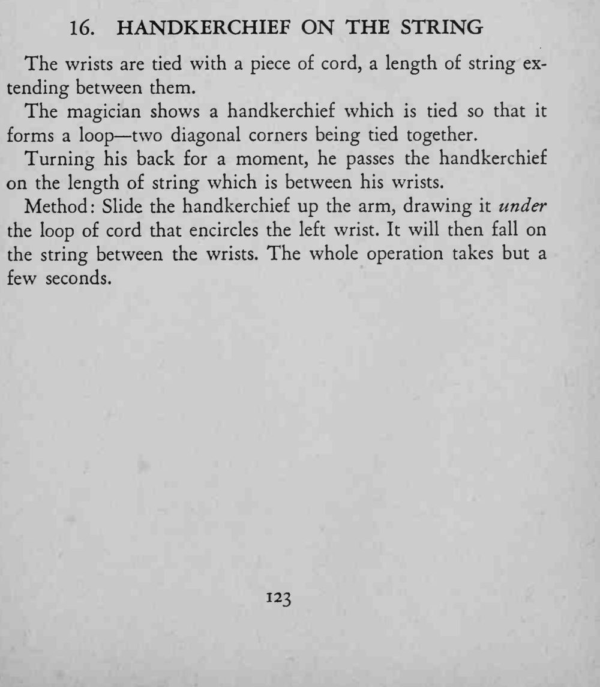
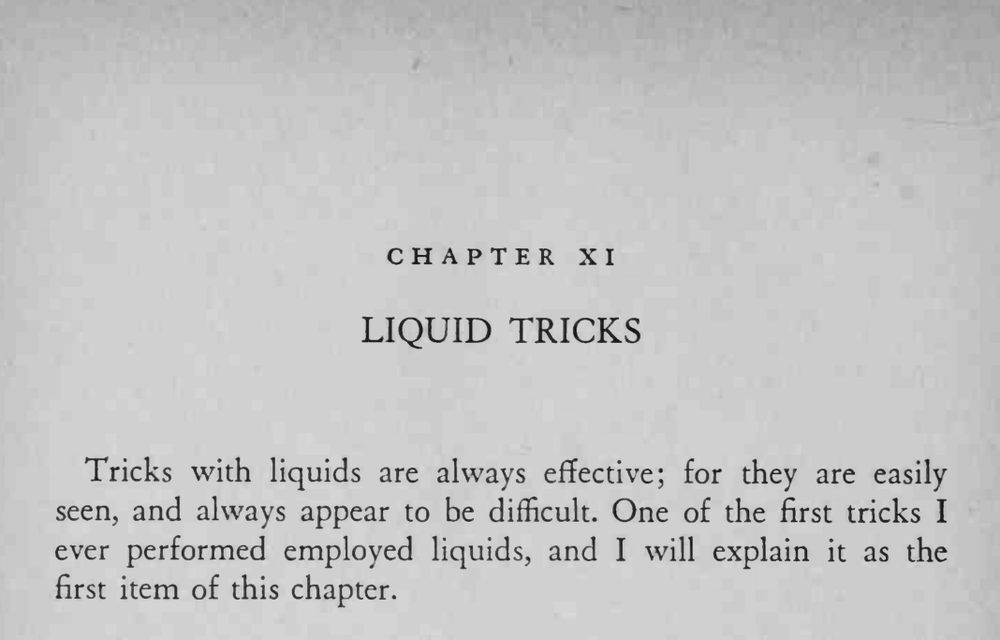

双手手腕被一根绳子系住，中间留出一段；魔术师把手帕对折成圈，转身片刻后，手帕已经出现在两腕之间的绳子上。
整个动作几秒钟就够，转身只是为了挡住穿绳的瞬间。


The wrists are tied with a piece of cord, a length of string extending between them. The magician shows a handkerchief which is tied so that it forms a loop two diagonal corners being tied together. Turning his back for a moment, he passes the handkerchief on the length of string which is between his wrists. Method: Slide the handkerchief up the arm, drawing it under the loop of cord that encircles the left wrist. It will then fall on the string between the wrists. The whole operation takes but a few seconds. Tricks with liquids are always effective; for they are easily seen, and always appear to be difficult. One of the first tricks I ever performed employed liquids, and I will explain it as the first item of this chapter.